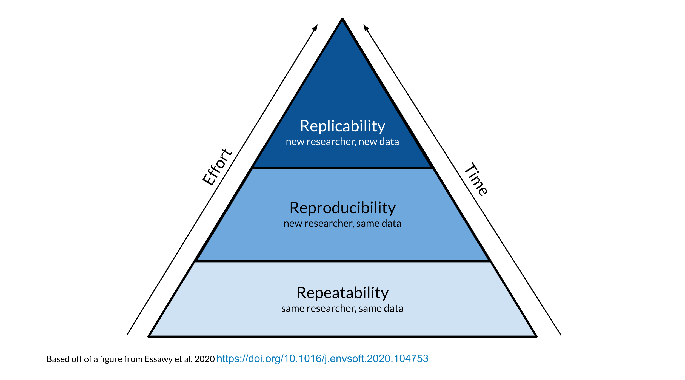

Reproducibility
What’s Reproducibility
Content adapted from Candace Savonen.

Reproducibility vs Repeatability vs Replicability

Why Reproducibility is important…

It’s worth the wait
Reproducibility can also be for your future self!

The process
R Markdown
R Markdown lets you test your work

R Markdown allows you to more clearly show what you did
R Markdown makes it easier to update code and see results
Clean your environment
Regularly cleaning your environment and trying your code again, can help ensure that your code is running as expected.
Occasionally we might forget to save a step of our code in our R Markdown file that we ran only in the console. This will help us figure that out.
Check if your file knits regularly
Regularly checking if your file knits will help you spot a missing step or error earlier when you have less code to try to identify where your code might have gone wrong.
Tell your future self and others what you did!
Provide sufficient detail so that you can understand what you did.
R Markdown syntax
Before:
After knit:
R Markdown syntax
Go to Help > Cheatsheets > R Markdown Cheatsheet or our website!
Versions matter
Session info can help
sessionInfo()More resources
These are just some quick tips, for more information:
Summary
To help make your work more reproducible:
- Use RMarkdown
- Clean your environment regularly
- Check the knit of your RMarkdown regularly
- Tell your future self and others what you did!
- Print session info!
üè† Class Website